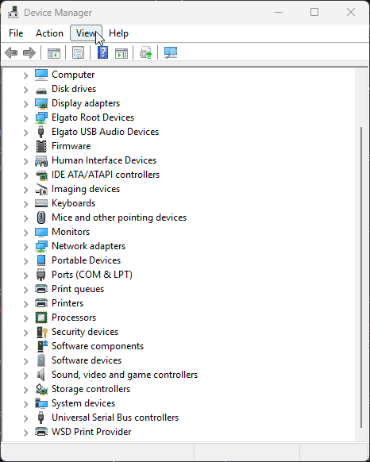

FAQ
Where's the GUI?
Where's the GUI?
SISR runs as a system tray application by default.
- Right-click the tray icon to show/hide the UI
- Or launch with
-w --window-fullscreen falseto show the window at startup - If the window runs as overlay press
Ctrl+Shift+Alt+SorLB+RB+BACK+A("A" button needs to be pressed last) to toggle UI visibility.
You can also run sisr --help to see all CLI options
I don't like the system tray app behavior, can I run it as a normal windowed application?
I don't like the system tray app behavior, can I run it as a normal windowed application?
Yes, you can!
Launch SISR with -w --window-fullscreen false to show the window at startup and disable fullscreen behavior
I don't like the chosen overlay shortcut/controller chord, can I change it?
I don't like the chosen overlay shortcut/controller chord, can I change it?
You do realize Steam Input can remap controller buttons/shortcuts, right?
You're smart, you can figure it out 😜
Why would I use this over Steam Input directly?
Why would I use this over Steam Input directly?
SISR can be used to circumvent issues with games and applications that do not support Steam Input or otherwise pose challenges, like (but not limited to):
- Games with aggressive anti-cheat systems
- Emulators
- Windows Store games/apps
- Games with broken Steam Input support
You can also use SISR to "tunnel"/forward Steam Input configurations over the network to other machines, including Keyboard/Mouse.
This makes it possible to use devices like a Steam Deck as a dedicated controller without the need to stream the entire game
Info
That said, if you do not have issues with Steam Input directly, you probably should not use SISR at all 😉
Can I use this with "Steam Link" / "Remote Play"
Can I use this with "Steam Link" / "Remote Play"?
Theoretically(?) But practically don't expect it to work or be a good experience.
Look into setting up Sunshine/Apollo and Moonlight instead!
Note that Sunshine/Apollo and Moonlight come with their own remote-input solution, that possibly interferes with SISR.
I have not yet had the time to write documentation for this
If you have used SISR with Sunshine/Apollo and Moonlight successfully, consider contributing to the documentation
Why would I want to use this instead of directly using USBIP/VirtualHere to forward controllers?
Why would I want to use this instead of directly using USBIP/VirtualHere to forward controllers?
Diretly forwarding the Steam Decks (or similar devices) inputs via USBIP/VirtualHere comes with significant drawbacks:
- The forwarded device is entirely "removed" from the host machine
- You cannot use the device on the host machine at all while it's forwarded
- There may be no way to "exit" the forwarding on the host machine without additional input devices or remote access,
you have to disconnect the USBIP/VirtualHere session from the client side
This can be especially problematic if the host machine is a Steam Deck...
- USBIP on Windows specifically does not currently work with the Steam Decks built-in controller
- VirtualHere is closed-source and requires a paid license for more than a single device
- I have personally experienced significant latency and input issues when using VirtualHere specifically on long gaming sessions
- On the Steam Deck (or similar devices), the Touchscreens inputs cannot be forwarded via USBIP/VirtualHere at all
SISR circumvents all of these issues by:
- Forwarding Steams Virtual Controllers instead of the physical device
- Forward additional Keyboard/Mouse devices alongside the controllers
- Providing "an out" using it's dedicated shortcut/controller chord (
CTRL+SHIFT+ALT+S,LB+RB+BACK+A) to toggle the UI visibility and stop/start forwarding - Being fully open-source and free to use
Even if a feature is not supported, everyone can grab the source-code of any part in the chain (except Steam itself) and implement it 😉
What is USBIP?
What is USBIP?
USBIP is a protocol for tunneling USB devices over TCP/IP
It allows a USB device on one machine to appear on another machine over the network (or localhost).
SISR uses USBIP (via VIIPER) to create emulated controllers that appear as real hardware at the system level
See USBIP setup for setup instructions
What is VIIPER?
What is VIIPER?
VIIPER (Virtual Input over IP EmulatoR) is the USBIP server that SISR uses to emulate controllers.
VIIPER is bundled with SISR
you don't need to download/setup it separately
VIIPER listens on:
:3241for USBIP connections:3242for the control API
See the VIIPER documentation for more details
How do I uninstall this?
How do I uninstall this?
The installation scripts as well as the documentation tell you what is happening during install.
To uninstall reverse those steps.
If you cant be bothered, run this in PowerShell
rm -rf "$env:LOCALAPPDATA\SISR"
rm -rf "$env:LOCALAPPDATA\VIIPER"
Remove-ItemProperty -Path "HKCU:\Software\Microsoft\Windows\CurrentVersion\Run" -Name "VIIPER" -ErrorAction SilentlyContinue
Remove-Item "$( [Environment]::GetFolderPath('Desktop') )\SISR.lnk" -ErrorAction SilentlyContinue
Remove-Item "$env:APPDATA\Microsoft\Windows\Start Menu\Programs\SISR.lnk" -ErrorAction SilentlyContinue
Driver Removal

The USBIP-Win2 driver can be removed via Device Manager
If you cant be bothered, run this in a terminal
rm -rf ~/.local/share/SISR
rm -rf ~/.local/share/VIIPER
sudo systemctl disable --now viiper.service
sudo rm /etc/systemd/system/viiper.service
sudo systemctl daemon-reload
sudo rm -rf /etc/modules-load.d/viiper.conf
USBIP can be uninstalled via whatever package manager your distribution uses
Common Issues
For common issues (doubled controllers, Steam CEF debugging, port conflicts, etc.), see: Troubleshooting
I want feature XYZ
Check GitHub Issues to see if it's already requested
If not, open a new issue
No guarantees, though.
Better yet, implement it yourself and open a pull request 😉
Alternatively, you can hire me to implement it for you 😜
Rates start at 100€/hour.